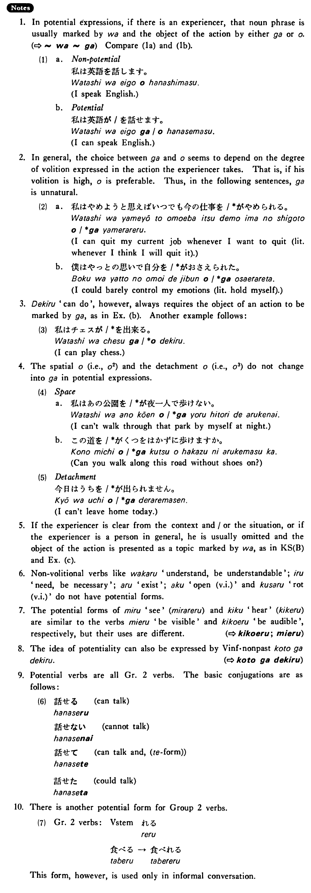

←
DoJG
→
られる (2)
(B. 370)
Example sentences
(ksa).
私は日本語が読
める・
読
めます
。
I can read Japanese.
(ksb).
この水は飲
めない・
飲
めません
。
This water is not drinkable.
(a).
ブラウンさんは刺身が食べ
られる
。
Mr. Brown can eat sashimi.
(b).
寺田さんはテニスが
出来る
。
Mr. Terada can play tennis.
(c).
この字は読
めない
。
This letter is not readable.
Formation
(i)
Group 1 verbs
Vconditional
る
話せ
る
Can talk
(ii)
Group 2 verbs
Vstem
られる
食べ
られる
Can eat
(iii)
Irregular verbs
来る
→来
られる
Can come
する
→
出来る
Can do
